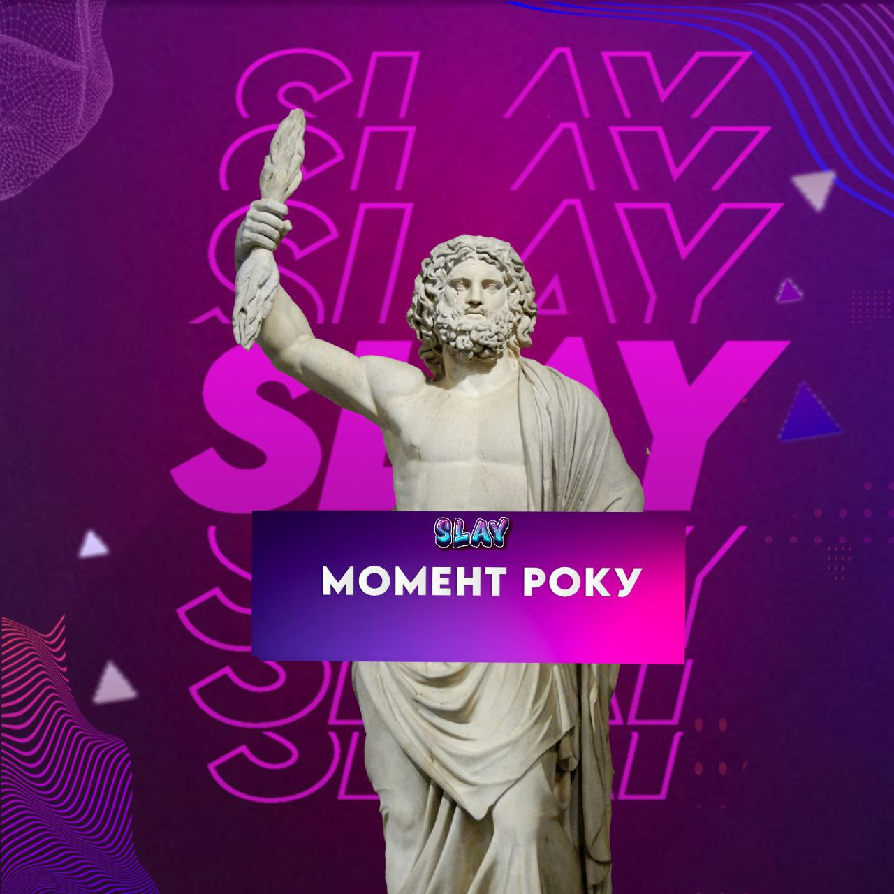
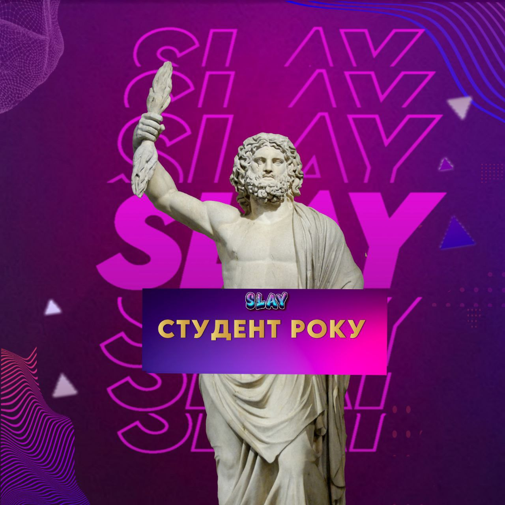

Викладач року

Викладач року - номінація, що має на меті з'ясувати, який викладач залишив найбільшого сліду в головах й серцях кожного студента, завзято пояснюючи матеріал на 10-тій хвилині перерви!
Момент року

Будь-то смішний, чи неочікуваний, момент, що для вас є моментом всього року, спогади про який найбільше гріють, чи викликають сміх.
Студент року

Cтудент року. Всім студентам студент, що своєю студенчистю перестудив й вистудентив всіх. Істинна легенда цього року.